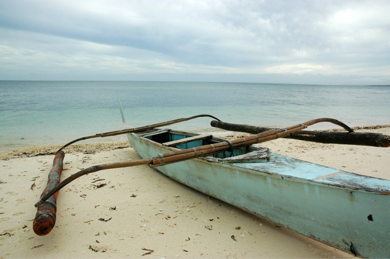

Reisen
Mail
Ferndrang
posted by
Ali & Felix
Japan
02/11/2017 – 18/11/2017
Peking
29/10/2017 – 02/11/2017
Äthiopien
18/12/2016 – 13/01/2017
Jordanien
17/09/2016 – 03/10/2016
Kolumbien
21/12/2015 – 18/01/2016
Borneo
17/08/2015 – 04/09/2015
Sri Lanka
13/12/2014 – 11/01/2015
Myanmar, Thailand
14/12/2013 – 06/01/2014
Brasilien
08/12/2012 – 04/01/2013
Thailand, Laos
09/06/2012 – 23/06/2012
Kuba
10/12/2011 – 31/12/2011
Vietnam, Kambodscha
18/02/2011 – 16/03/2011
Namibia, Botswana
29/08/2010 – 17/09/2010
Taipeh, Bali
28/08/2009 – 18/09/2009
Venedig
20/05/2009 – 24/04/2009
Peru, Bolivien
12/12/2008 – 17/01/2009
Indonesien
15/06/2008 – 30/06/2008
Indien
23/12/2007 – 26/01/2008
Tibet
17/06/2007 – 03/07/2007
Costa Rica, Panama
04/12/2006 – 01/01/2007

Philippinen
26/12/2005 – 21/01/2006
Ägypten
05/2005
Tansania
04/12/2004 – 31/12/2004
Guatemala, Honduras
30/10/2003 – 29/11/2003
Venezuela
04/12/2002 – 31/12/2002